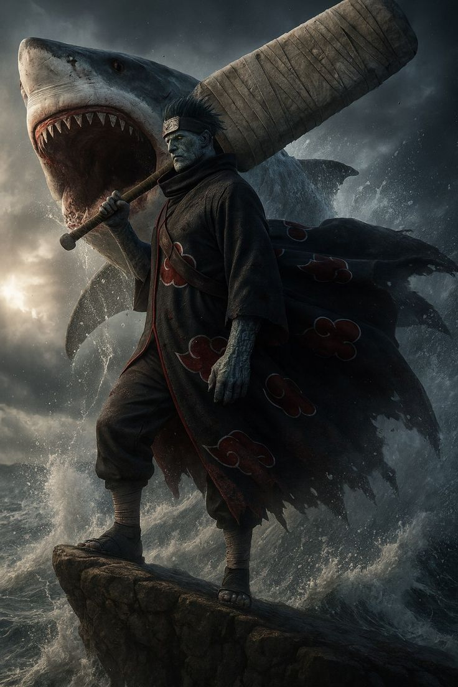

Kisame Hoshigaki is a powerful member of the Akatsuki in Naruto, known for his shark-like appearance, immense chakra reserves, and brutal combat style. He is originally from the Hidden Mist Village and was once part of the Seven Ninja Swordsmen of the Mist, wielding the legendary sword Samehada, a living weapon that absorbs chakra from opponents and can even merge with him.
Kisame is often referred to as the “Tailless Tailed Beast” due to his massive chakra levels, which rival those of actual tailed beasts. His abilities focus heavily on water-style jutsu, allowing him to create massive water domains, summon shark attacks, and flood entire battlefields. When fused with Samehada, his strength, speed, and healing abilities increase significantly.
Kisame Hoshigaki from Naruto has a calm, composed, and surprisingly philosophical personality despite his brutal appearance and fighting style. He is highly loyal, especially to his partner Itachi Uchiha, and respects strength and honesty. Unlike many members of the Akatsuki, Kisame values truth and despises deception, as his past in the Hidden Mist Village was filled with betrayal and lies.
He is confident and somewhat intimidating, often speaking in a relaxed and almost polite manner even during intense battles. Kisame embraces violence as part of his nature but is not reckless—he is strategic, patient, and fully committed to his mission. Beneath his ruthless exterior, he has a strong sense of purpose and belief in a world without lies, which drives his actions. His unwavering loyalty and acceptance of his own dark nature make him one of the most grounded and unique personalities in the series.
Kisame Hoshigaki from Naruto possesses extremely powerful and unique abilities, making him one of the strongest members of the Akatsuki. His most notable weapon is Samehada, a living sword that absorbs chakra from opponents instead of cutting them. It can also heal Kisame and merge with him, greatly increasing his strength, speed, and regeneration.
Kisame has enormous chakra reserves—so large that he is called the “Tailless Tailed Beast.” This allows him to use massive water-style jutsu, such as creating giant water domes that trap enemies and give him a huge advantage in battle. Within this water sphere, he can move like a shark while opponents struggle to survive.
He can also summon powerful shark-based attacks, including techniques where multiple sharks chase and devour enemies. When fused with Samehada, Kisame gains enhanced senses, faster healing, and the ability to absorb even more chakra directly from opponents. Combined with his physical strength, durability, and strategic fighting style, Kisame is an incredibly dangerous close- and long-range fighter who can overwhelm enemies with both power and endurance.

Kisame Hoshigaki from Naruto carried out several important missions as a loyal member of the Akatsuki, mainly focused on capturing tailed beasts and supporting the group’s larger objectives. Alongside his partner Itachi Uchiha, Kisame was tasked with tracking powerful targets, including jinchūriki like Naruto Uzumaki. One of his key missions was infiltrating the Hidden Leaf Village with Itachi, where they tested the strength of its defenders and searched for Naruto. Kisame also took part in operations to capture tailed beasts, using his overwhelming chakra and water-style techniques to dominate battlefields.
Later, one of his most critical missions involved gathering intelligence during the Fourth Great Ninja War. Even when cornered by enemies like Might Guy, Kisame remained loyal to the Akatsuki’s goals. To protect sensitive information, he ultimately chose to sacrifice himself rather than be captured, showing his unwavering dedication to his mission and beliefs until the very end.
Kisame Hoshigaki joined the Akatsuki after becoming disillusioned with the shinobi world and its constant deception in Naruto. Originally, Kisame was a member of the Seven Ninja Swordsmen of the Mist and served the Hidden Mist Village as a loyal but ruthless shinobi. He was often assigned brutal missions, including eliminating his own comrades to protect sensitive information.
Over time, Kisame began to question the meaning of loyalty and truth, realizing that the world he served was built on lies and betrayal. This inner conflict made him lose faith in his village and its system. During this period, he encountered Obito Uchiha (posing as Madara Uchiha), who revealed a vision of a world without deception. Believing in this idea, Kisame chose to join the Akatsuki, seeing it as a path toward a world where truth could exist—even if achieved through harsh means. From that point on, he became one of the organization’s most loyal and dedicated members, fully committed to its mission and ideals.